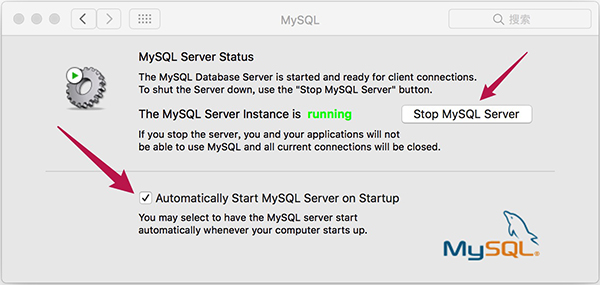

Mac平台下安装与配置MySQL
Mac 安装MySQL
官网下载安装包，选择相应的版本和格式，有 .dmg 和 tar压缩包两种。我选择了 Mac OS X 10.11 (x86, 64-bit), DMG Archive 的版本下载，目前网站下载需要你注册登录，这个完全免费注册登录进去，就可以下载了。
DMG 文件点开默认安装完成之后(新版需要重启操作系统)，就可以在系统偏好设置里面看到 MySQL 的偏好设置面板。

Mac 卸载MySQL
通过下面命令删除干净MySQL，同时在进入 系统偏好设置 里面删除 MySQL 的图标的设置项，点击右键会弹出 移除MySQL偏好设置面板
sudo rm -rf /usr/local/mysql*
sudo rm -rf /Library/StartupItems/MySQLCOM
sudo rm -rf /Library/PreferencePanes/My*
sudo rm -rf /Library/Receipts/mysql*
sudo rm -rf /Library/Receipts/MySQL*
sudo rm -rf /var/db/receipts/com.mysql.*
vi /Library/Receipts/InstallHistory.plist # 进入搜素 mysql , “shif+:” 输入mysql
find / -name mysql -print 2> /dev/null
sudo find / | grep -i mysql
mysql命令不存在
有一个设置开机启动的勾选配置和一个服务启动和停止的按钮，管理MySQL服务。在命令行中就可以使用 MySQL 命令，新版 MySQL 如果没有mysql命令，提示 -bash: mysql: command not found 命令没有找到，你需要检测服务是否启动。
$ mysql -uroot -p
-bash: mysql: command not found
两种方式可以查看到服务是否启动，进入 系统偏好设置 查看服务运行状态。也可通过命令 ps -ef | grep mysql 查看服务是否启动，如果有多条记录输出到命令行面板，说明服务启动了。在服务启动中，MySQL 命令找不到，需要配置环境变量。
编辑 .bash_profile ，如果你命令行安装了 oh-my-zsh 命令行工具，你需配置 .zshrc 。
sudo vim ~/.bash_profile
在 .bash_profile 文件中添加下面文本
export PATH=${PATH}:/usr/local/mysql/bin
让 .bash_profile 配置文件立即生效：
source ~/.bash_profile